Examples#
This gallery walks through every public feature of
chemistrykit.structure: VSEPR geometry prediction with real 3D
coordinate generation; point-group determination from 3D coordinates
(genuine symmetry-element detection, not a formula lookup) and character
tables; bond order from the Pauling length correlation and from
Huckel-theory MO coefficients; formal-charge/oxidation-state
assignment from a Lewis structure and Pauling electronegativities;
Kekule-structure enumeration; Baeyer ring angle strain; and dipole
moments.
Each script in this gallery is self-contained and can be run directly with
python examples/structure/<section>/<script>.py. Every script also
carries an RST module docstring as its title/description and uses # %%
markers to split narrative text from code, which is exactly what
Sphinx-Gallery renders into the pages below – the script is the source of
truth for what you see, not a copy of it.
Sections#
vsepr – van’t Hoff and Le Bel’s tetrahedral carbon and chirality, steric number to idealized molecular shape, and hypervalent molecules.
point_group – Schoenflies symbols from detected symmetry elements, Werner’s octahedral isomer counting, Mulliken’s irrep labels, and Bethe’s crystal-field splitting of the d orbitals.
bonding – the Coulson pi bond order from Huckel molecular-orbital theory, and the Pauling bond-order/bond-length correlation.
lewis – formal charges of competing Lewis structures, oxidation states in Kossel’s ionic limit, and Pauling electronegativities from bond energies.
kekule – Kekule structures of benzene and larger aromatics.
ring_strain – Baeyer’s angle strain in planar cycloalkanes.
dipole – molecular dipole moments from bond dipoles and charges.
Bond order#
The Coulson pi bond order from Huckel molecular orbitals, and Pauling’s bond-order/bond-length correlation.
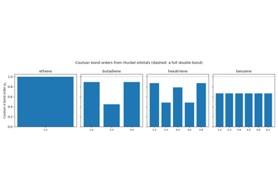
Coulson’s molecular-orbital bond order in butadiene, hexatriene, and benzene
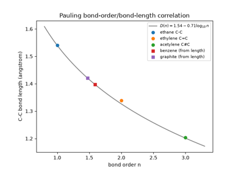
Pauling’s bond-order and bond-length correlation for carbon-carbon bonds
Dipole moments#
Molecular dipole moments from partial charges and from vector sums of bond dipoles.
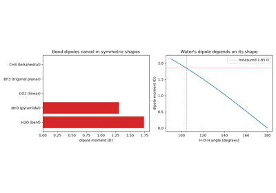
Debye’s permanent dipole moments: polar and nonpolar molecules from geometry
Kekulé structures#
Enumerating the alternating single/double-bond structures of benzene and other conjugated hydrocarbons.
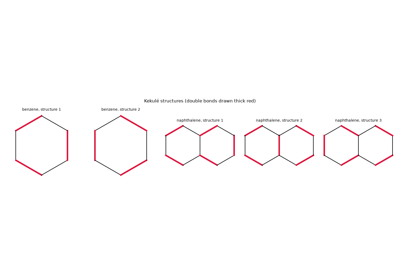
Kekulé’s benzene: enumerating the Kekulé structures of aromatic hydrocarbons
Lewis structures, oxidation states, and electronegativity#
Lewis’s shared electron pair and formal charge, Kossel’s ionic limit and oxidation states, and Pauling’s electronegativity scale from bond energies.
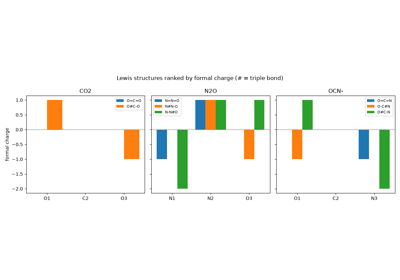
Lewis’s shared electron pair: choosing between Lewis structures by formal charge
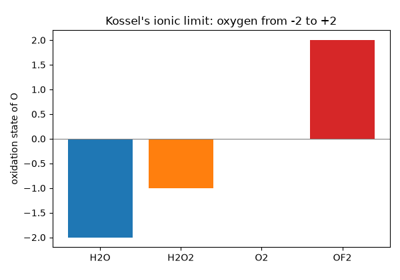
Kossel’s ionic bond: oxidation states as the fully ionic limit
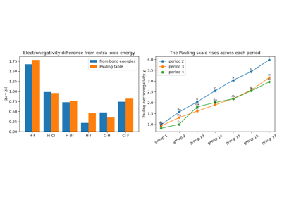
Pauling’s electronegativity scale from bond energies
Point-group determination#
Genuine symmetry-element detection from 3D coordinates (rotation axes, mirror planes, an inversion center), combined into a point-group classification, and the corresponding character tables.
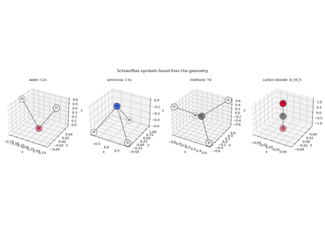
Schoenflies point-group symbols for water, ammonia, methane, and carbon dioxide
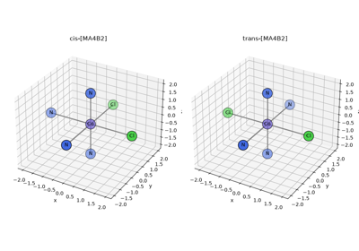
Werner’s coordination theory: counting isomers to prove the octahedron
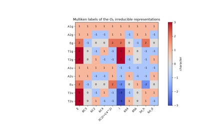
Mulliken symbols: reading the labels of irreducible representations
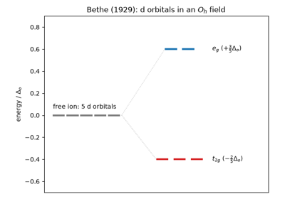
Bethe’s crystal-field splitting: d orbitals in an octahedral field
Ring strain#
Baeyer’s angle-strain theory of cycloalkanes, and why puckered rings escape it.
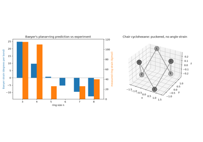
Baeyer’s strain theory: angle strain in planar cycloalkane rings
VSEPR geometry prediction#
Steric number and lone-pair count to idealized 3D molecular geometry, via real electron-domain coordinate generation – not a shape-name lookup table.
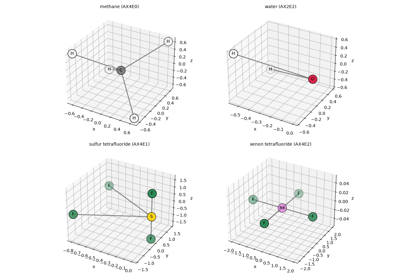
VSEPR geometry prediction: from steric number to real 3D coordinates
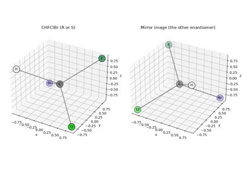
Van’t Hoff and Le Bel’s tetrahedral carbon: chirality from real 3D coordinates
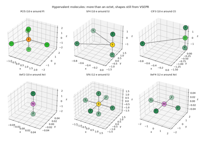
Musher’s hypervalent molecules: main-group centres beyond the octet